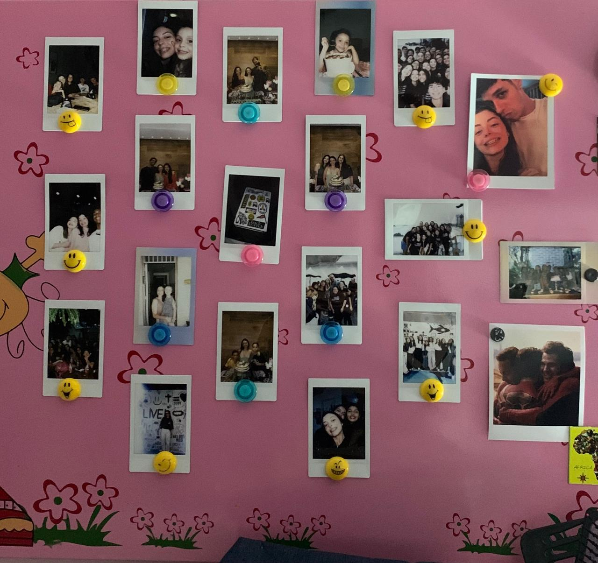

Nasci em Vila Velha, gosto muito de ler livros de aventura, fantasia e romance, gosto de fazer crochê, tocar ukulelê e cantar;
Sou cristã, faço parte da igreja Missão Praia da Costa;
Umas das coisas que eu mais gosto de fazer é escutar música, sinto que com ela é possível demonstrar sentimentos. Minha múscia preferida é Fine Line do Harry Styles;
Meus animais favoritos são: gato e tartaruga, tenho uma gata chamada Olívia e tinha uma tartaruga chamada Cristal;
Adoro o ramo automotivo, gosto muito de ir em eventos de carros, também gosto de assistir Formula 1
Vou deixar aqui algumas fotos e videos:
Esse quadro é onde eu coloco as fotos de pessoas importantes para mim.
Esse é o vídeo do acampamento que teve na minha igreja.
Essa sou eu tocando Ukulelê.